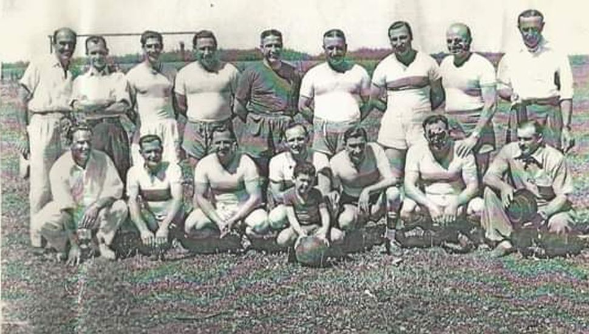

Hay un sol radiante este 20 de Junio de 1952. En el potrero frente a la Casa Fernández, un grupo de muchachitos sudorosos descansan después de un partido y conversan. Tal vez se escucha algún comentario del cuadrangular que se había disputado en O’Higgins, el 25 de mayo, en el que muchos de ellos participaron llevando la representación de la localidad de Morse. Allí se distinguieron Goyo y Armando Díaz, "Juanucho" Quiroga, Rubén Alegre, Paco Bertella, Chibelo Villafañe, Pedro Gatti, Ernesto y Leandro Alonso, Roberto Arias, Tobo y Cola Sanes, Titi Colnago, Chopi Stefanoni, entre otros.
Veo que se aproxima un señor canoso con intenciones de charlar con los jugadores. Se llama Blas Botto. Es un enamorado del deporte y, lamentablemente, ha fracasado en sus intentos de organizar una entidad que represente al fútbol de la localidad. Así desaparecieron hace tiempo El Cóndor y Progresista. Botto fue el promotor de la citada excursión a O’Higgins, en donde la embajada que presidió dejó una buena imagen deportiva. Esto lo alentó para organizar algo duradero. Le propuso a ese grupo de jóvenes, que descansaban en el área frente a la Delegación, la creación de un club, y su propuesta fue apoyada con medido entusiasmo por los sudorosos que lo escuchan sin demasiado interés. De todos modos, el pedido de Botto fue aceptado y ahí mismo se improvisa una Comisión Directiva, con la presidencia de él mismo, quien anticipa que al día siguiente irá a entrevistarse con el Intendente de Junín, para conseguir la concesión del predio en donde soñaba que funcionaría. Así fue el inicio del Club Atlético Belgrano.
